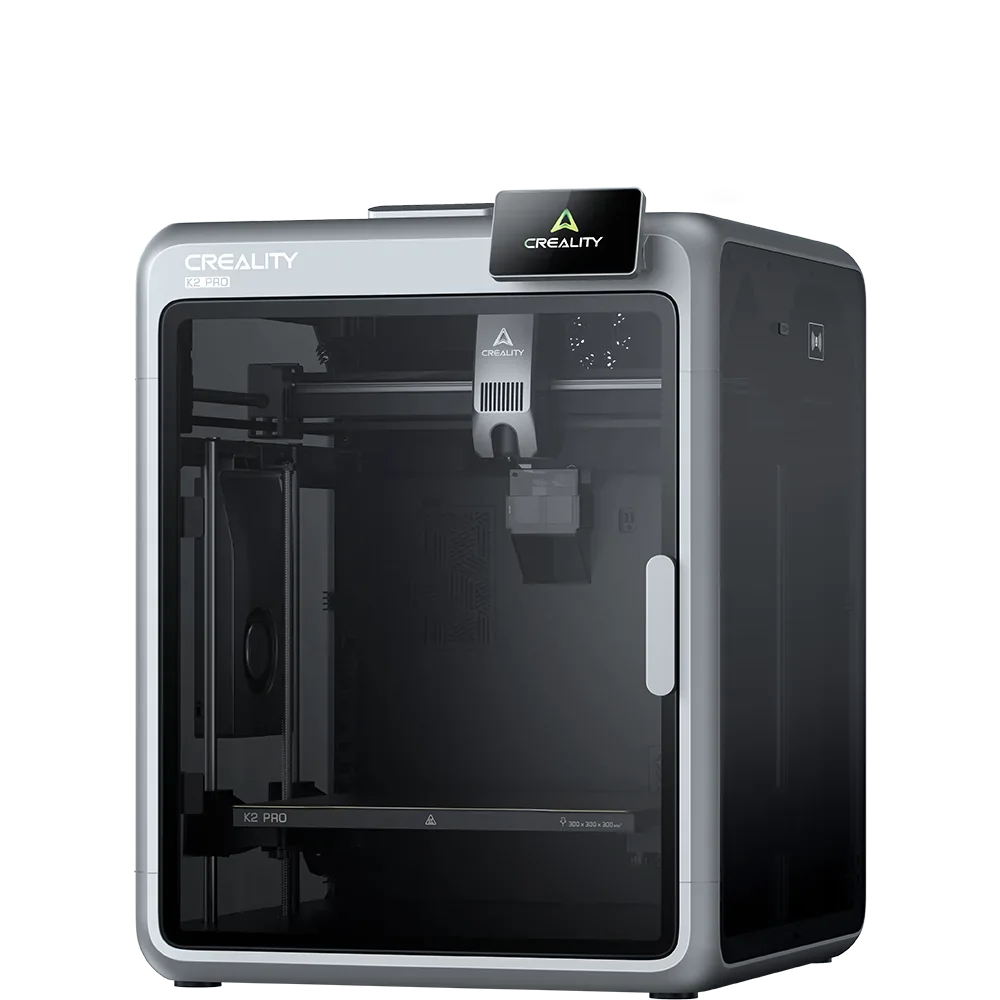

Build volume
300 x 300 x 300 mm
Advertised dimensions; check usable space and variants.
Middle K2: 300 mm cube with a 60 C heated chamber, RFID filament reader, Ethernet and a nozzle AI camera for flow calibration.

300 x 300 x 300 mm
Advertised dimensions; check usable space and variants.
300 C claimed max nozzle temperature
Published limits; hardware and firmware limits may differ.
$599.00 and $799.00 are the two variant prices listed on the Creality US store K2 Pro Combo page, Aug 2026 - the combo includes a CFS unit, so neither figure is a bare-printer price
Dated listing, not a live offer. Read the configuration and region.
Understand the hardware, explore compatible changes and find a diagnostic starting point when something goes wrong. Expand the specification sections for every recorded value, condition and original reference.
Dimensions, construction and the hardware that moves the print.
| Property and unit | Published value and conditions | Sources and dates |
|---|---|---|
| Manufacturer & exact marketed model name (verify the exact product identity first) | Creality K2 Pro | 1 source |
| Street price (USD; dated snapshot per entry) | $599.00 and $799.00 are the two variant prices listed on the Creality US store K2 Pro Combo page, Aug 2026 - the combo includes a CFS unit, so neither figure is a bare-printer price | 1 source |
| Variants & sibling models — and how to tell them apart (spec-contamination risk) | Between the K2 (260 mm cube, no chamber heating, 100 C bed, 8 GB) and the K2 Plus (350 mm cube, 350 C nozzle, 120 C bed, 30000 mm/s2, dual filters, auto belt tensioning, 1080p camera, dual-band Wi-Fi). The K2 Pro shares the K2's 300 C nozzle and 70 W hotend but gets the chamber heater, RFID reader, Ethernet and 32 GB storage | 1 source |
| Property and unit | Published value and conditions | Sources and dates |
|---|---|---|
| Build volume X×Y×Z (mm) — advertised vs actually usable | 300 x 300 x 300 mm | 1 source |
| Machine footprint (mm) & clearance needed (cable/spool overhang) | 445 x 477 x 573 mm | 1 source |
| Net weight (kg) | 23.7 kg | 1 source |
| Enclosure: open / enclosed; panel material; door/lid | Enclosed with chamber temperature control up to 60 C; one air filter | 1 source |
| Passive chamber temperature reached (if enclosed; measured values preferred) | 60 C max chamber temperature (manufacturer figure) | 1 source |
| Property and unit | Published value and conditions | Sources and dates |
|---|---|---|
| Kinematics (bedslinger i3 / CoreXY / other) | CoreXY - Creality groups the K2 series with its CoreXY flagships and quotes 600 mm/s with step-servo motors on the X and Y axes | 1 source |
| Belts (type, width, e.g. Gates?) | Manual belt tensioning | 1 source |
| Stepper motors (frame size, step angle, brand if known) | Step-servo motors on the X and Y axes and the extruder | 1 source |
| Property and unit | Published value and conditions | Sources and dates |
|---|---|---|
| Max print speed (claimed, mm/s) | 600 mm/s max printing speed (manufacturer claim) | 1 source |
| Max acceleration (claimed, mm/s²) | 20000 mm/s2 max acceleration (manufacturer claim) | 1 source |
Extrusion, heating, leveling and material handling.
This replacement changes to FlowTech cold-change nozzles. Choose the exact model in the manufacturer selector: K2 and K2 Pro use thermistor parameters different from K2 Plus.
Applies to: K2 or K2 Pro matching selector option; K2 Plus and K2 SE assemblies are not interchangeable.
| Property and unit | Published value and conditions | Sources and dates |
|---|---|---|
| Max nozzle temp claimed AND firmware max temp limit (both values) | 300 C claimed max nozzle temperature | 1 source |
| Heater cartridge power (W) | 70 W rated hotend power | 1 source |
| Property and unit | Published value and conditions | Sources and dates |
|---|---|---|
| Max bed temp claimed AND firmware limit | 110 C max heatbed temperature | 1 source |
Creality’s procedure checks plate contamination, material-specific bed temperature, residual filament affecting homing, leveling and strain-gauge operation. Start with cleaning and the documented homing/leveling checks before changing a persistent offset.
Applies to: K2 and K2 Pro are explicitly covered; do not transfer their strain-gauge procedure to K2 Plus or K2 SE without a matching guide.
| Property and unit | Published value and conditions | Sources and dates |
|---|---|---|
| Auto bed leveling: probe technology (inductive / strain gauge / load cell / touch probe) | Smart auto levelling, plus automatic flow-rate calibration using a nozzle AI camera | 1 source |
For this feeding code, inspect spool tangles, deformed spools and the PTFE path between the hub outlet and extruder detector. The official procedure then tests the hub motor and filament detector if the path is clear.
Applies to: K2, K2 Pro, K2 Plus and Creality Hi with CFS; these exact models are listed. This is a code-specific procedure, not a frequency claim.
| Property and unit | Published value and conditions | Sources and dates |
|---|---|---|
| Part-cooling fan(s): count, size, ducting design | One auxiliary cooling fan and one air filter | 1 source |
| Property and unit | Published value and conditions | Sources and dates |
|---|---|---|
| Officially supported filament list | PLA, PETG, PET, ABS, ASA, PLA-CF, PA-CF, PPA-CF | 1 source |
Firmware, controls, connections and calibration.
| Property and unit | Published value and conditions | Sources and dates |
|---|---|---|
| Firmware base & current version (Klipper fork / Marlin fork / proprietary) | Creality OS, a Klipper derivative. Creality publishes the K2 firmware source as CrealityOfficial/K2_Series_Klipper on GitHub under GPL-3.0, last pushed March 2026 | 3 sources
|
| Property and unit | Published value and conditions | Sources and dates |
|---|---|---|
| Display: size, type, touch? | 4-inch touchscreen | 1 source |
| On-device UI capabilities (model preview, per-object controls, etc.) | Touch UI with alarm sounds and a built-in RFID reader for automatic filament identification (needs Creality RFID filament) | 1 source |
| WiFi (band/standard), Ethernet, USB ports, SD/flash-drive | Wi-Fi 2.4 GHz, RJ45 Ethernet, USB drive and a Creality 485 port; 32 GB eMMC | 1 source |
| Camera: built-in / optional? Resolution & framerate (verify — marketing often omits real fps) | One chamber camera at 720p 30 fps, plus a separate nozzle AI camera used for flow calibration | 1 source |
Published safeguards, support terms and independent evidence.
| Property and unit | Published value and conditions | Sources and dates |
|---|---|---|
| Thermal runaway protection (verify in firmware source if at all possible) | Not verified directly. Creality publishes the K2-series firmware as CrealityOfficial/K2_Series_Klipper (GPL-3.0); upstream Klipper ships the verify_heater thermal-runaway check, but whether the stock configuration enables it was not checked here |
| Property and unit | Published value and conditions | Sources and dates |
|---|---|---|
| Warranty length & support reputation (evidence, not vibes) | Creality's US store states "Up to 12-Month Warranty", a 14-day return and refund window and "Lifetime Customer Support" on its printer product pages. The "up to" wording means the term is not uniform across parts | 1 source |
This guide presents the catalog’s sourced record for this exact model. Source dates belong to each reference; a page update does not mean every specification has been rechecked.
Prices are dated listing snapshots, with configuration, regional and sale conditions. They are not current offers. Unknown values remain unfilled.
Firmware, variants and available accessories can change. Read the original reference before making a purchase or planning a process.
Firmware, modifications and troubleshooting links are checked against the model and stated hardware or firmware revision. A creator’s compatibility claim is not a fit test by this site. Official troubleshooting describes a diagnostic route; individual reports do not establish a failure rate.
This review did not verify firmware customization or update guidance, printable modifications for this exact model. That is a research gap, not a claim that none exist.